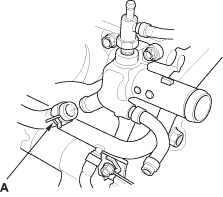
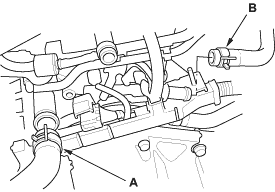
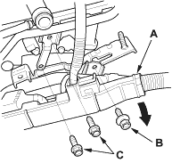

NOTE:
- Use fender covers to avoid damaging painted surfaces.
- To avoid damage, unplug the wiring connectors carefully while holding the connector portion.
- To avoid damaging the cylinder head, wait until the engine coolant temperature drops below 38°C (100°F) before loosening the cylinder head bolts.
- Mark all wiring and hoses to avoid misconnection. Also, be sure that they do not contact other wiring or hoses, or interfere with other parts.
- Drain the engine coolant (see page 10-6).
- Remove the drive belt (see page 4-25).
- Remove the intake manifold (see page 9-3).
- Remove the water bypass hose (A).

- Remove the exhaust manifold (see page 9-7).
- Remove the cam chain (see page 6-13).

- Remove the engine wire harness connectors and wire harness clamps from the cylinder head.
- Engine Coolant Temperature (ECT) sensor connector
- Top Dead Centre (TDC) sensor connector
- Camshaft Position (CMP) sensor connector
- Remove the upper radiator hose (A) and heater hose (B).

- Remove the harness holder (A) from the bracket, then remove the connecting pipe mounting bolt (B) and water bypass line mounting bolts (C).
